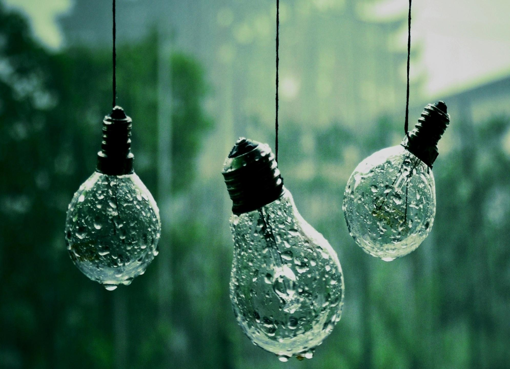

hello here parallax goes
possible through JavaScript but more recently, pure CSS can also be employed to achieve the same. In fact, pure CSS parallax is steadily becoming the method of choice for integrating the technique into web design.
Here is a demo showcasing how p